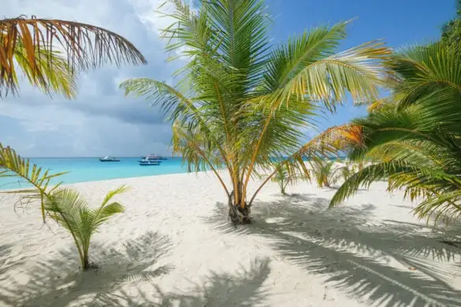
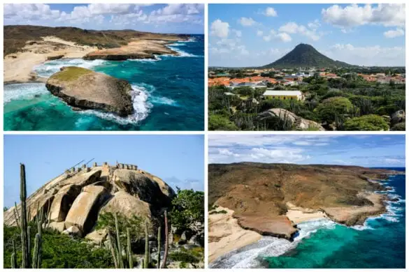
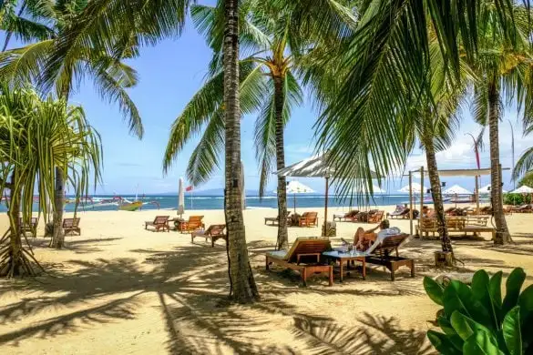

Blog
Recent Travel Blog Post
Blog posts

Fulidhoo Island Guide: Shark & Stingray Beach In Maldives
Fulidhoo is a small, budget-friendly local island we visited recently in the Maldives, along with Dhigurah island, which we loved for its beaches and sandbar.
Lower Antelope Canyon Tour Review & Photos
Even though Aruba is mainly known for its beaches and other fun activities, there are also some easy and family friendly hikes on the island

10 Best Hikes In Aruba: Family Friendly Trails
We recently went to Arizona and tried all of the Antelope Canyon tours, including the two main sections: Upper Canyon and Lower Canyon

Sanur Bali Travel Guide: 24 Best Things To Do
Sanur is known for being one of the most quiet and family friendly areas of Bali Indonesia, but there are also plenty of good things to do
Labengki Island Guide: Beach Hut Paradise In Sulawesi Indonesia
Palawan island has become famous for its tropical scenery and island hopping, but in a head-to-head comparison of Coron vs El Nido which is better?